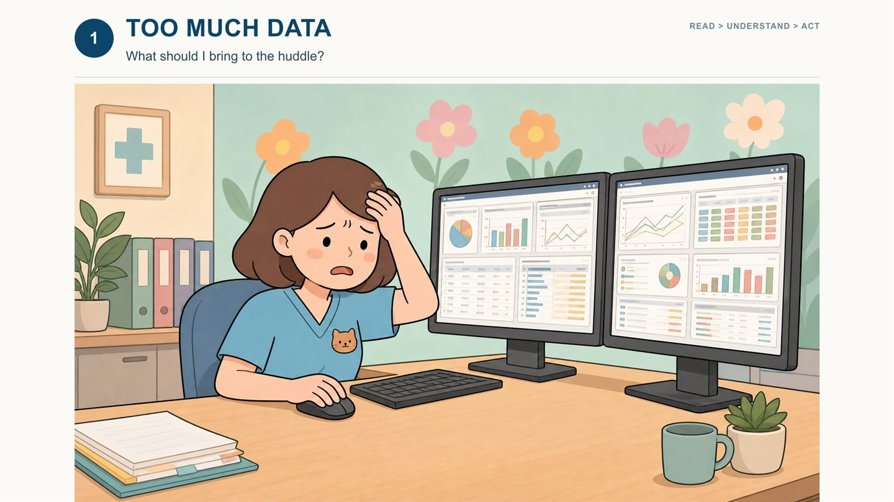
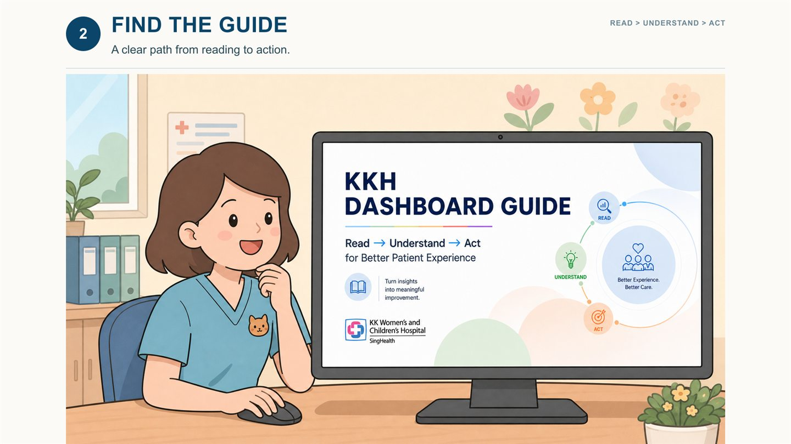
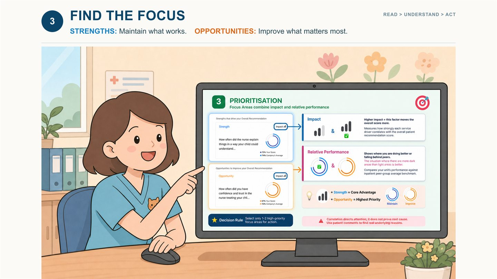
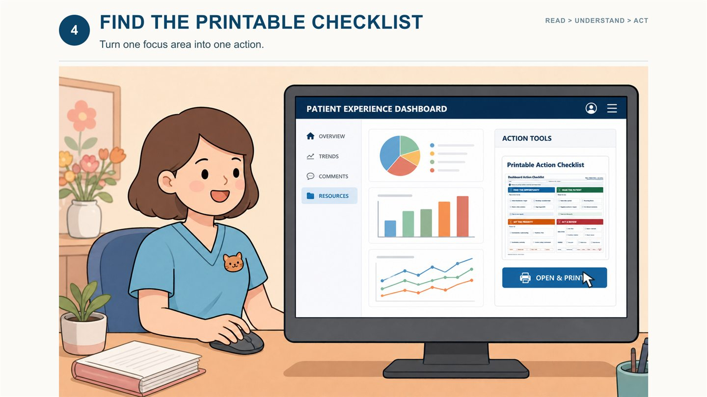
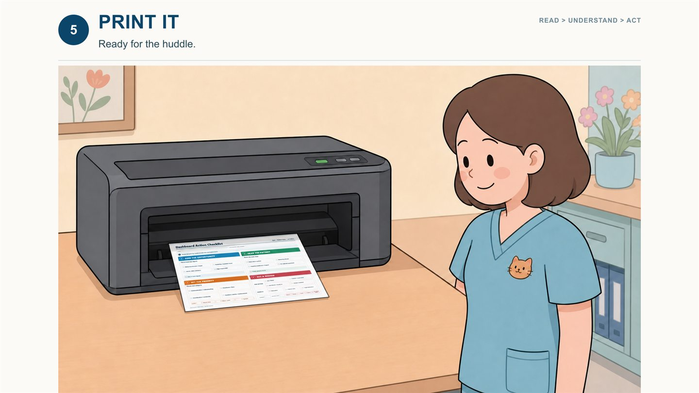
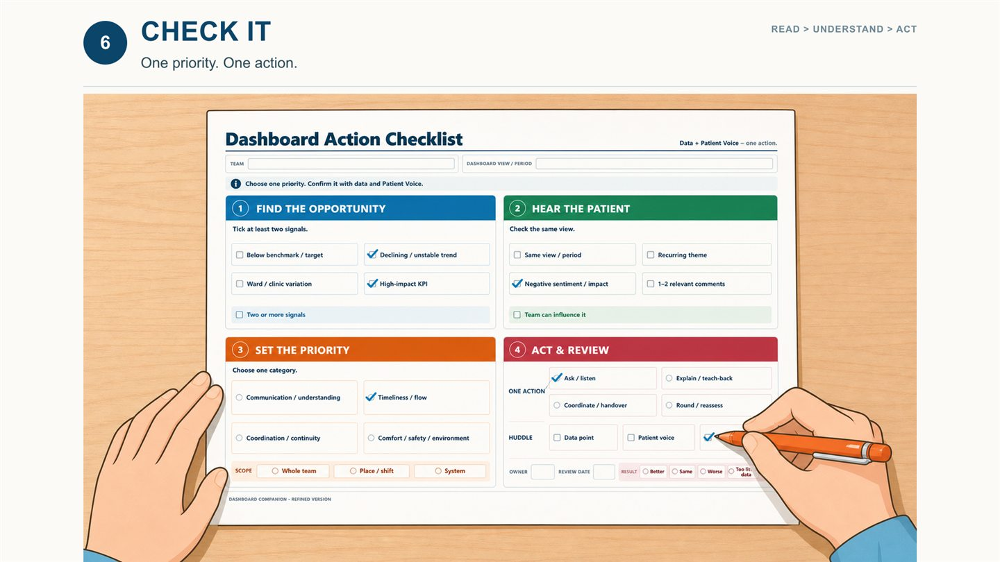
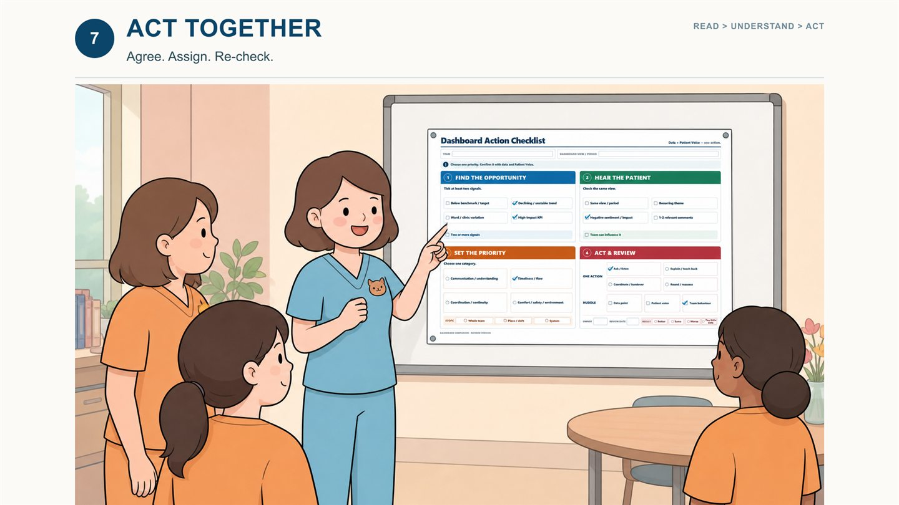
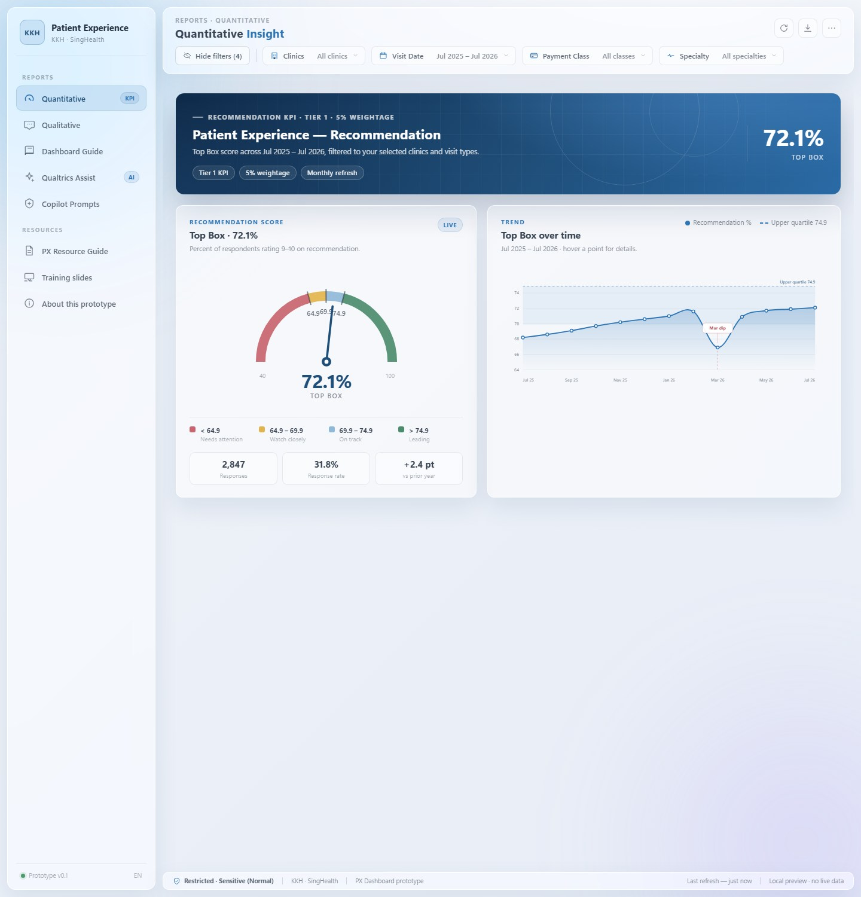
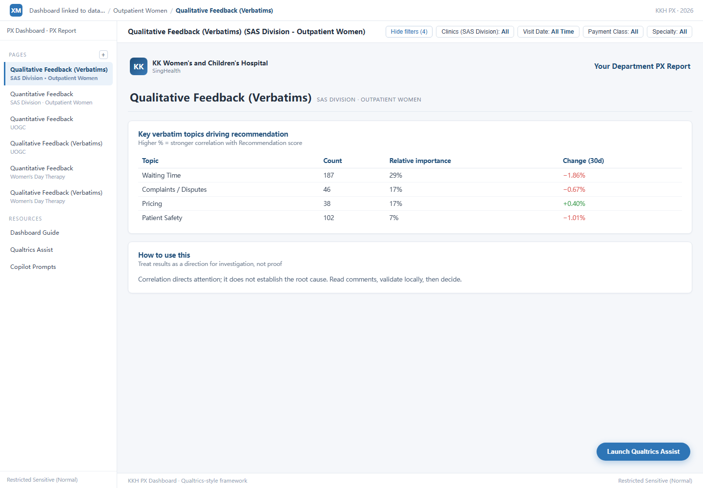

案例 02 · 用 AI 做设计
KKH PREMs Translation Toolkit
把患者体验反馈（PREMs）转成病房日常改进 —— 以 Read → Understand → Act 三步框架，与 Resource Guide / Checklist / Storyboard 三件套交付，并被医院正式采纳。
- 问题
- 医院持续收集患者体验反馈，但数据"摆在那儿"不等于"被用起来"。
- 我的角色
- 设计落地：用 AI 驱动，把研究洞察快速做成可被临床采用的工具。
- 方法
- Read → Understand → Act 三步框架 + Resource Guide / Checklist / Storyboard 三件套。
- 成果
- 被新加坡 KK 妇幼医院正式采纳，进入临床实践。
背景与问题
问题不在于有没有数据，而在于病房团队能否在日常工作里快速找到焦点并行动。
病房每天面对满屏的体验数据看板，但"看完之后该做什么"，往往没有答案。数据与行动之间，缺的不是更多图表，而是一套翻译——把数字翻译成一次晨会能落地的动作。
我访谈了三类角色来定位这个断点：医院负责人、护士长、医生（同周同一天，每人 ≤30 分钟）。他们的共同困境高度一致：时间被压缩在晨会前后，需要的不是"更多信息"，而是"今天先做什么"。
方法
三步框架把"读数据"变成"做决定"，三件套把它装进晨会。
Read → Understand → Act
Read · 读
先看整体看板，不急于下判断。
Understand · 找焦点
把维度分成"保持优势"与"改进重点"，锁定一个焦点。
Act · 行动
把一个焦点，转成晨会上一个可执行、可复检的动作。
三件套
Resource Guide · 7 段走读
手把手讲清怎么读看板、怎么找到焦点。
Checklist · 4 步清单
把一次改进拆成可打勾的四个动作。
Storyboard · 7 帧情景
用情景画出一线护士的真实一天，让方法可被共情。
故事板
七帧情景，走完一个护士从"淹没在数据里"到"带着一个动作走进晨会"的全程。







图 · KKH 故事板（7 帧）。用来把方法讲成人能共情的一天，也是这套工具箱最有说服力的部分。
界面与落地
这三张界面是「用 AI 做设计」的成果证据——不只是做研究，还能把洞察做成真实可用的产品界面。



采纳与影响
把一个研究洞察，做成被医院真的用起来的东西。
设计取舍
这个项目里，三个关键的设计取舍。
先问"谁、什么时候会用它"
同样是看板，负责人关心趋势、护士长关心排班、护士只关心"今天先做什么"。三十分钟的访谈，比多画十版界面更能定方向。
AI 驱动的是速度，不是判断
Vibe coding 让一个原型能在一天内成型，但"哪个原型值得留下"仍然是人的判断。5 版里淘汰掉的，比留下的更有说服力。
被采纳 ≠ 做完了
进入临床只是开始。真正的考验是三个月后，护士是否还在打印那张清单——这决定了它是"一个交付物"还是"一个习惯"。